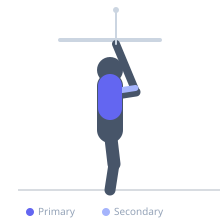

Exercise guide / Cross-Body Dual Cable Lat Pulldown
Cross-Body Dual Cable Lat Pulldown
The cross-body dual cable pulldown uses both sides of a functional trainer simultaneously, with each hand pulling the opposite cable downward in a crossing motion. This arrangement places the lats under constant tension through a rotational arc and challenges the core's rotational stability. The crossed cable path provides a unique contraction angle not replicable with straight-down pulldown machines.
Primary muscles
latissimus dorsi
Secondary muscles
teres major
biceps brachii long head
trapezius lower
Stabilizers
internal oblique
external oblique
transverse abdominis
Equipment
Cable Machine (Dual Pulley / Functional Trainer)


Starting position
- Set both pulleys on a dual cable machine to the highest position. Attach single handles to each. Stand in the center and reach up to grip the handles — right hand grips the left cable, left hand grips the right cable.
Setup
- Set both sides to equal weight. Stand centered between the cable columns with arms crossed and extended overhead.
Steps
- Step 1: Stand between the cable columns holding crossed handles, arms fully extended overhead.
- Step 2: Brace the core and maintain a slight forward lean.
- Step 3: Simultaneously pull both handles downward and inward, drawing the elbows to the sides of the torso.
- Step 4: At the bottom, hands finish near the hips with lats fully contracted.
- Step 5: Slowly return both arms to the overhead crossed start position.
Coaching cues
- Pull elbows to your sides
- Squeeze lats hard at the bottom
- Control the return slowly
Breathing
- Exhale on the pull, inhale on the return.
Range of motion
- Full overhead extension at the start to arms at sides with lats contracted at the finish.
Tempo
- 2-1-3-0
Common mistakes
- Using momentum or rocking to initiate the pull
- Not controlling the return phase, losing lat engagement
Safety
- Start with light weight to learn the coordination pattern
- Ensure both cable sides are set to equal weights
Training
- hypertrophy: 10–15 reps
- endurance: 15–20 reps
- hypertrophy: 3–4 sets
- endurance: 2–3 sets
- Rest: {'hypertrophy': 90, 'endurance': 45}